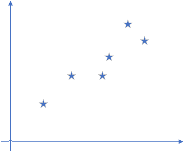
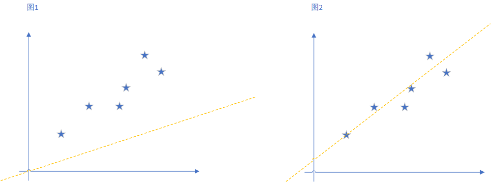
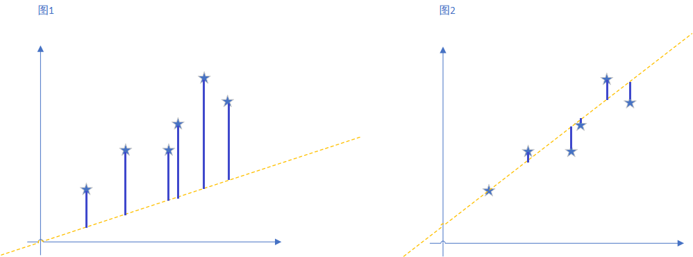
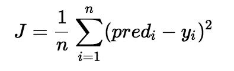
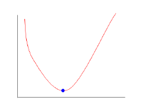
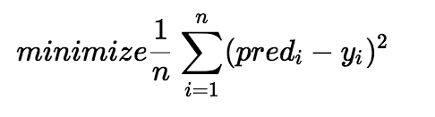
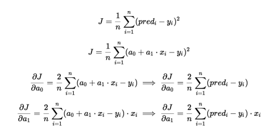
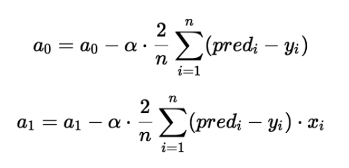
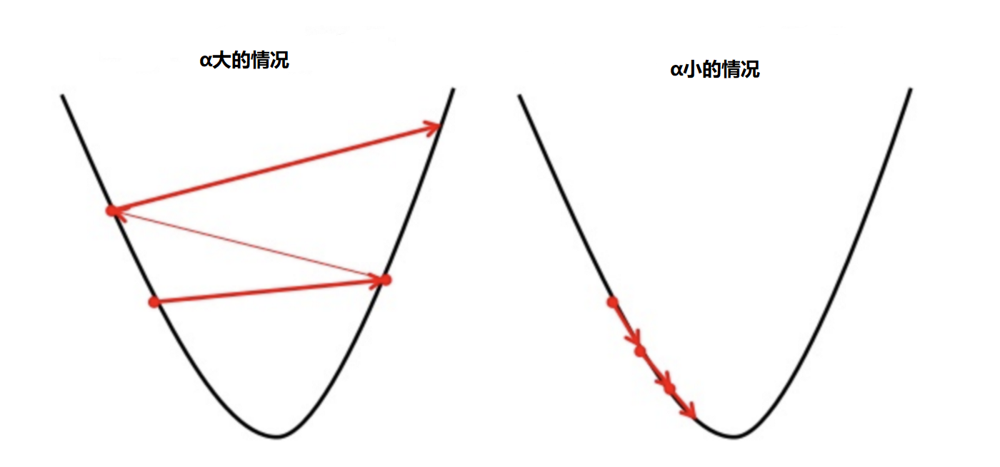

原文连接:https://www.cnblogs.com/listenfwind/p/11180475.html
一.从线性回归的故事说起
相信大家都听过著名的博物学家，达尔文的大名，而今天这个故事的主人公就是他的表弟高尔顿。
高尔顿是一名生理学家，在1995年的时候，他研究了1078堆父子的身高，发现他们大致满足一条公式，那就是
Y=0.8567+0.516*x
这条式子中的x指的是父亲的身高，Y指的是儿子的身高。可以明显看出，这就是我们中学时代学的二元一次方程，反应在平面上就是一条直线。
通过这条公式，我们或许会直观得以为高个的父亲总会有高个的儿子，矮个的父亲会有矮个的儿子。但高尔顿进一步观察后发现，并非所有的情况都是这样的。特别高的父亲的儿子会比他父亲矮一些，特别矮的父亲的儿子会比他父亲高一些，父子不会说一直不断得更高或更矮下去。这个现象，其实就是回归。趋势不会一直持续下去，而是会回到某个中心。
通过这个故事，相信你已经明白了什么是线性回归，那么接下来我们就来说说更加详细的内容。
二.理解线性回归

抛出问题：假设有这样的一些点，这些都是现有的数据，我们要找到拟合这些点的线，然后预测接下来的点。那我们要怎么找出这条线呢？
h(x)=a0 + a1 * x（a1是斜率，a0是截距）
或者说换个问法，我们要怎么求出a_1和a_0呢？
Cost Function（代价函数）
第一次接触线性回归的同学可能不知道什么叫cost function，其实当碰到不知道的概念的时候，只要想清楚两件事，这个概念是什么，有什么用。想清楚这两点，起码就不会犯迷糊了。
代价函数是什么？
我们先随便画两条线来拟合那些点，如图所示，可以看到，明显图二更加拟合，也就是说图二的线更接近我们理想中的线。

OK，再仔细观察，图二的线和图一的线有什么不同呢？最明显的，就是图一中，各个点沿y轴到那条直线的距离更远，而图二中各个点到线的距离更近。

这所有点沿y轴到直线的误差，也就是各个点的误差，的平均值。就是代价函数。公式如下：

pred(i) 就是第i个点上，直线的y值，y(i)就是第i个点，这个点的y值，加上平方主要是避免了负数的情况。这就是代价函数。
代价函数有什么用？
代价函数有助于我们找出a0和a1的最佳可能值。前面说到，代价函数就是每个点在y轴到直线的距离的平均值。我们的目标就是最小化这个值，在普遍情况下，代价函数是凸函数，如下图所示，

看到这个函数是不是比较熟悉？在学习导数的时候不就经常看到这样的图嘛，这种图通常也是通过求导来解的。

从y=a0+a1*x，这条直线开始。到写出代价函数，我们的目标一直没变，就是要找出a0和a1，让这条直线更贴紧那些点（就是让代价函数最小）。当然，我们还没说到如何让代价函数最小化，下面我们就接着说说如何让代价函数最小化吧。
Gradient Descent（梯度下降）
梯度下降是什么？
梯度下降是一种不断迭代更新a0和a1以降低代价函数的方法。 我们可以通过对代价函数求导的方式，看出应该让a0或a1加还是减。

上面部分其实就是对代价函数的求导，通过对其求导，我们能够知道a0和a1应该是增大还是减少。

这条公式其实就是（a0-代价函数的偏导数）。当然，其中还有一个控制速率的α(Alpha)，对代价函数的求导能知道是对a0和a1增大还是减少，那么α就是应该增大多少，减少多少。
举个例子，假设你现在在半山坡，你要做的是下山，代价函数的偏导数，就是告诉你应该向下还是向上。而速率α就是来控制步子要迈多大。
步子小（α小）意味着小步快跑下山，缺点是跑比较久。大步向前（α大）意味着比较快，但可能一下子迈太大，跑到对面半山腰去了。

梯度下降有什么用？
通过梯度下降，能够让我们找到一个局部最优解的a0和a1，为什么是局部最优解呢？因为现实中的问题可能没一开始的例子那么清晰，很多时候你发现可能这条线也可以，这条线也不错，那条好像也可以。计算机也会这样，它可能也会觉得某条线就已经够好了。就不去找其他的线了。
反应到我们求的问题里面，可以说因为是最小化问题（最小化代价函数），但可能像右图一样，它已经在一个局部里面是最小的了，向左向右都是升高，既然如此那就安心当咸鱼喽。这种现象和初始的随机选择有关，也和训练的速率有关。

当选择了一个合适的α值，当更新迭代足够多次之后。理论上就会到达某个底部，这时候也就意味着代价函数是某个范围内最小的。这个时候的a0喝a1就被我们求出来了，我们就能够得到一条拟合空间中点的直线了。
最后再说一下，刚刚介绍的都只是在二维空间中的计算，也就是只有一个特征。而现实中往往不止会有一个特征，而是多个特征，如下面的形式：
h(x)=a0 + a1 * x1 + a2 * x2 + a3 * x3 ...
不过计算方式和计算的方法都是类似的。只是数据量会变多，计算会更加复杂些。
OK，今天先从一个例子开始介绍线性回归。然后阐述了代价函数，以及求解代价函数最小化的一个方法，梯度下降。后面会介绍用sklearn来做线性回归，以及其他多种回归分析方法的初步介绍。
以上~
推荐阅读：
Windows上IDEA搭建最新Spark2.4.3源码阅读及调试的开发环境
Scala 函数式编程指南（一） 函数式思想介绍
通俗地说决策树算法（二）实例解析
大数据存储的进化史 --从 RAID 到 Hadoop Hdfs
C，java，Python，这些名字背后的江湖！